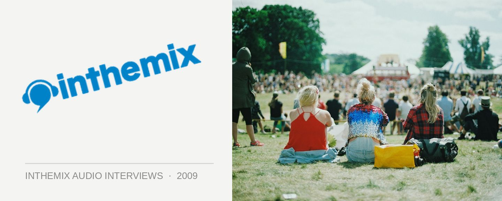

DJ Nervous: Making his final Transmission
STREAMING AUDIO INTERVIEWS
Sydney’s Transmission parties have been the city’s benchmark for big parties over the past 14 years, staging just under 50 events since 1996 and entertaining more than 160,000 punters. In that time DJ Nervous AKA Simon Coffey and crew have taken the brand from its humble beginnings at Sublime’s old Pitt Street venue, to some extremely memorable all-night events at the Metro earlier in the decade and finally, the current arena-style home at the massive Olympic Sports Centre in Homebush. Now, it’s time to wave the brand goodbye with one final party.
“I feel as though I’ve done all that I can with the Transmission brand,” DJ Nervous told ITM earlier this year. He’ll will be stepping up one last time to helm the final Transmission, and it’ll mark his final DJ set before he hangs up his headphones for good. “14 years is enough, and I want to take it out on a high.”
By his side on the evening will be all the old-school Transmission favourites like John Ferris, Pee Wee Ferris, Chromatic, Nik Fish and Bexta, as well as some elite hard dance international talent in the form of Headhunterz, Wildstylez and Project One. To mark the occasion, ITM’s Angus Paterson got DJ Nervous on the phone to have a chat about making his final Transmission.
Come relive your favourite Transmission memories when Transmission’s Final Farewell hits the Sydney Olympic Sport Centre this Saturday 30th May.